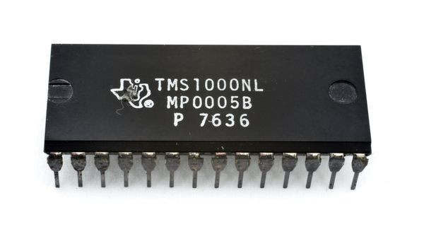
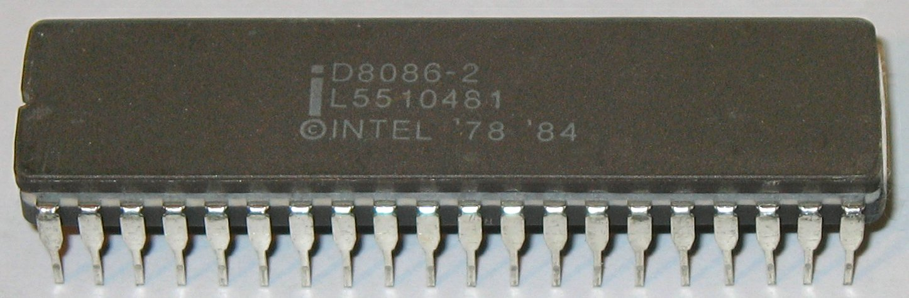
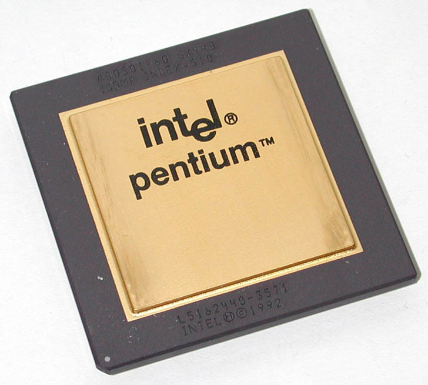
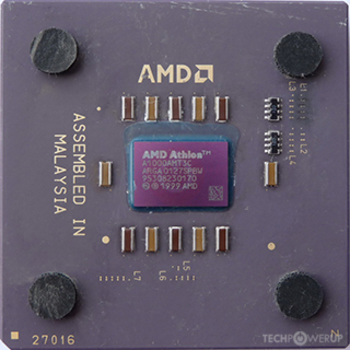
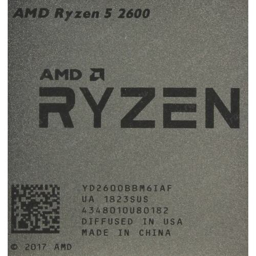

    
Добро пожаловать. Данный сайт содержит информацию о 50 важнейших микропроцессоров.
Мы сравнили в табличном виде процессоры с 1971 по 2024 года по таким показателям,
как частота работы, количество ядер, архитектура, технология производства (техпроцесс).
Предлагаем ознакомиться с первым коммерчески доступным процессором, Intel 4004: